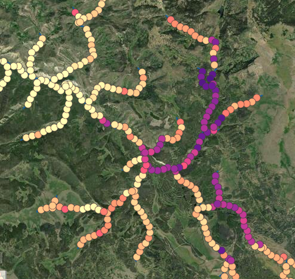
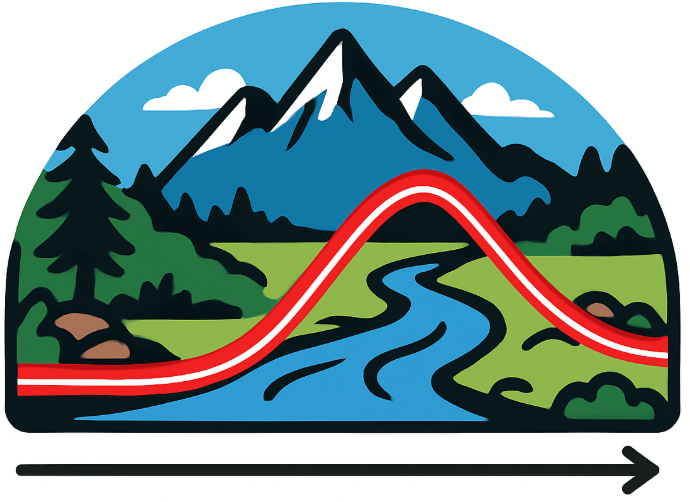

I am passionate about open science and making my research and data as transparent and accessible as possible.
As much of my work is applied, I develop and contribute to data visualization and decision-support tools to increase the accessibility of my research and inform decision-making for conservation and management.
I use R and RStudio for my statistical computing and GitHub for version control. I publish almost all of my projects to websites using Quarto, which I find incredibly effective for organizing my workflow and collaborating with other scientists. See below for a list of these sites.
Data visualization and decision support tools
Groundwater Availability Data Viewer

Groundwater is a key component of riverine hydrology. Groundwater-fed stream and river habitats are expected to serve as climate refuges for cold-water fish as groundwater input buffers against stressful water temperatures and hydrologic variability. Yet accurate, spatially continuous estimates of groundwater availability in river systems are not widely available, particularly at spatial scales relevant to fisheries habitat management. In a recent paper, we applied machine learning techniques to remotely sense landscape data and field observations of groundwater springs to generate high-resolution, spatially continuous estimates of groundwater availability across the upper Snake River watershed, Wyoming. Explore the data visualization tools here.
STREAM: Simulation Toolkit for River Ecosystem Adaptive Managment
Photo credit: Bureau of Reclamation
Climate change and hydrologic alteration by dams are reshaping river systems worldwide, threatening freshwater biodiversity, ecosystem function, and the sustainability of critical ecosystem services. Environmental flows – allocating water specifically to sustain ecosystems – offer an opportunity to integrate ecosystem needs into water management. However, flow recommendations may need to be updated as climate change shifts the environmental context under which recommendations were originally developed.
STREAM is a decision support platform that simulates how changing streamflow and temperature influence the productivity of Yellowstone cutthroat trout in the upper Snake River watershed, Wyoming. Built for fisheries and water managers and conservation professionals, STREAM integrates long-term environmental and biological data to support adaptive, climate-resilient management strategies. STREAM is currently in beta testing. Access STREAM here.
WySEaSON Stream Temperature Explorer

Temperature is a “master variable” in aquatic ecosystems, influencing everything from water quality to the distribution of aquatic organisms. As part of my Ph.D., I established an extensive stream temperature monitoring network across the upper Snake River watershed, Wyoming, leveraging data collected by the University of Wyoming, U.S. Forest Service, U.S. Geological Survey, and Wyoming Game and Fish Department. This sensor network is maintained by the University of Wyoming. To view and download the temperature data and access other tools to understand thermal regimes in this mountain ecosystem, click here.
Project websites
Here is a list of Quarto websites supporting my research. Many of these projects are currently in progress and as such the websites are subject to change.
Growthscapes: exploring the value of migratory life-histories to populations of cold-water fish.
EcoDrought: understanding fine-scale spatial heterogeneity in headwater streamflow (supporting book).
Temp-Flow-Sensitivity: modeling the effect of streamflow on water temperature in headwater streams.
YCT-ReddCounts-Ricker: quantifying the effects of changing climate and water management on trout productivity (STREAM decision support tool).
SnakeRiver-GSI: using genetic stock identification to understand the riverscape factors that shape population diversity of cutthroat trout.
PASTA-groundwater: exploratory work using paired air-stream temperature analysis to improve regional temperature modeling.
Super-Ricker: exploratory analysis to quantify the effects of superimposition rates on the strength of density dependence for cutthroat trout.
SnakeRiverAssessment: evaluate Yellowstone cutthroat trout population trends for the WyACT Snake River Climate Assessment.
Data releases
Baldock JR, Rosenthal WC, Al-Chokhachy R, Campbell MR, Wagner CE, and Walters A. 2026. Fish genetics data and population location information from the Upper Snake River basin, WY (2020-2022): U.S. Geological Survey data release. DOI: 10.5066/P134IPH5
Baldock JR. 2025. Redd count monitoring data for Yellowstone cutthroat trout spawning in groundwater-fed tributaries to the Snake River, Wyoming [Data set]. Zenodo Digital Repository, DOI: 10.5281/zenodo.17594482.
Al-Chokhachy R, D’Angelo V, Baldock JR, Sauer HE, and Muhlfeld CC. 2025 Streamflow and stream temperature data from the Northern Rocky Mountains (2012 - 2023). U.S. Geological Survey data release, DOI: 10.5066/P1HQEFG4.
Al-Chokhachy R, Baldock JR, and Walters AW. 2024. Fish sampling data, water temperature data, and groundwater spring location data from the upper Snake River basin, WY, 2021-2023. U.S. Geological Survey data release, DOI: 10.5066/P1YJCBPU.
Baldock JR, Al-Chokhachy R, Campbell MR, and Walters A. 2023. Data from: Timing of reproduction underlies fitness tradeoffs for a salmonid fish. Zenodo Digital Repository, DOI: 10.5281/zenodo.7839081.